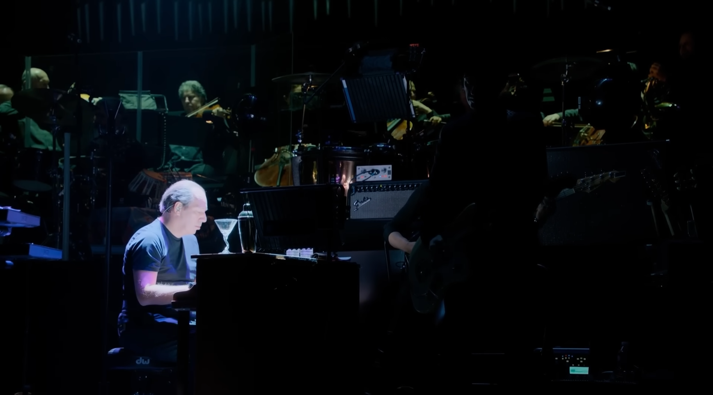
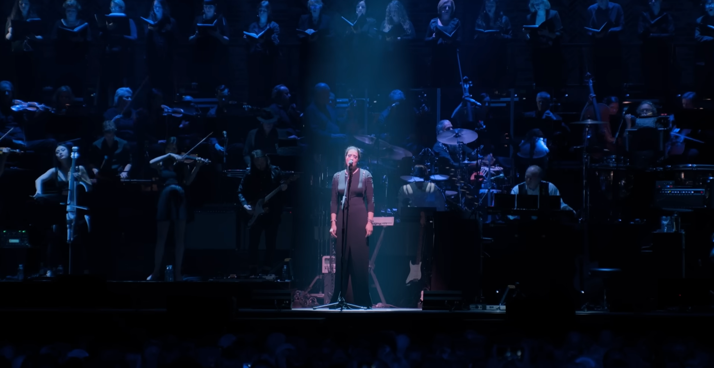
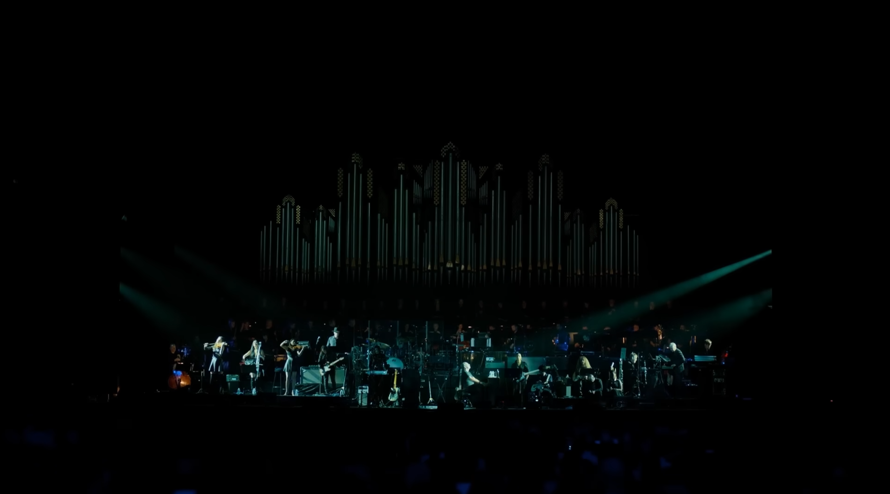
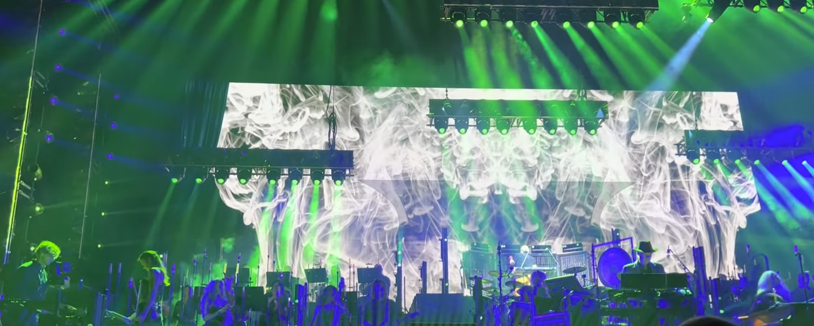
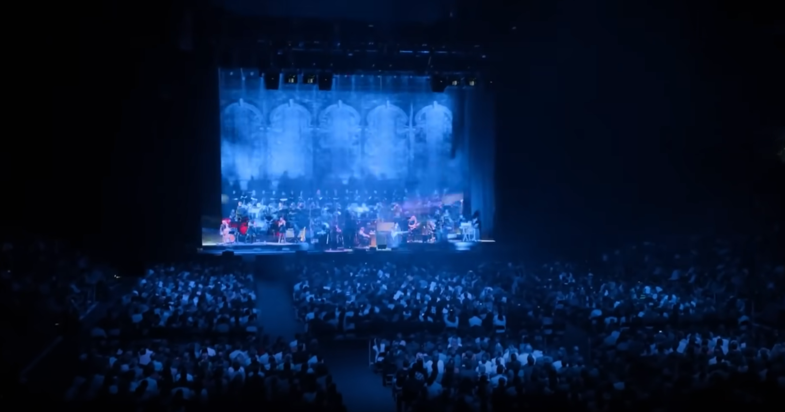
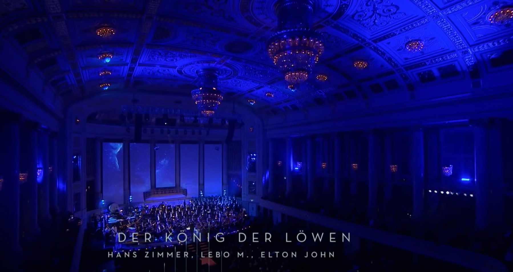

“Time” – Inception (Live in Prague)
Hans Zimmer’s orchestral and electronic mix in this live performance is both powerful and haunting. The slow build and rich tones make it one of his most iconic tracks.
“Now We Are Free” – Gladiator (Live)
Originally sung by Lisa Gerrard, this haunting melody brings ancient Rome to life. Zimmer’s live arrangement is powerful and emotional, with soaring vocals and intense instrumentation.
“Cornfield Chase” – Interstellar (Live)
This emotional piece from Interstellar mixes a simple piano motif with organ and ambient textures, performed live with an almost sacred intensity.
“Why So Serious?” – The Dark Knight (Live)
With deep brass and piercing tension, this track from The Dark Knight is brought to life with visuals and instrumentation that capture the Joker’s chaos and Gotham’s dark grit.
“He’s a Pirate” – Pirates of the Caribbean (Live)
One of Zimmer’s most adventurous pieces, this swashbuckling performance explodes with energy. You’ll feel the waves, cannons, and sails fluttering in the wind.
“Circle of Life” – The Lion King (Live in Vienna)
A majestic performance of the iconic opening from The Lion King, this arrangement features Zimmer’s original orchestrations, Lebo M’s vocals, and the grandeur of a full choir.